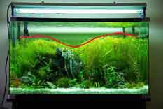

Aquascaping
A GUIDE TO ADVANCED AQUASCAPING
Aquascaping is a learned art form that allows you to create an underwater landscape,
inspiration for many works come from both underwater locations
but also natural scenes such as mountains, jungles, deserts,
waterfalls and many others.
Designing an aquascape can be challenging.
Aquascaping involves using basic principles of design and applying them to the aquarium.
Browsing other aquascapes can help you decide what style and layout you enjoy the most.
To aid in your designing process this page is filled with some stunning examples
of aquascaping.
To know Mother Nature, is to love her smallest creations
Takashi Amano
Before we jump in and explore aquascaping there needs to be a functioning aquarium environment.
Aquascaping setups can differ significantly from standard tropical setups.
This is because some aquatic plants require higher lighting and nutrient rich substrates
to thrive.
Each link below walks through an important parameter to consider when setting
up your aquascape. Low maintenance aquascapes have since become popular in the hobby.
These utilize minimal CO2, less fertilizer supplementation and low wattage lighting.
Lower lighting setups can be just as stunning but are limited to a smaller variety
of plants. These usually include ferns, moss, crypts and anubias.
Click on these links for more Information
The Process
Assuming you have put your substrate in, connected up your CO2 and turned your lights on you
are almost ready to go. So, design.
I cannot give you your design but i can give you some pointers that will help the design process.
Ok so now it’s time to aquascape.
Before we start it’s important to remember that the biggest factor in Aquascaping is
imagination.
The internet can only tell you so much but with your sense of view and imagination it is
not hard to create something truly inspiring. Nothing is concrete,
if you design something, create it and dislike it, take it down!
Destroy and rebuild it as many times as you want until you are impressed.
- Becoming frustrated – yes the tanks on the internet are beautiful but not impossible;
they have nothing that you don’t have so go for it!
- Using one type of plant – it may give a theme to the tank but can become boring
– mix it up!
- Using only large leaf plants, larger plants will make your aquascape look smaller and not
as deep, the finer the leaves, the larger your scape!
- Keep it simple stupid – yes it’s great to have the entire tank full of every type of
plant that’s ever existed, but this doesn’t look good! Be sure to have as much open space
as filled space, infact tanks with lots of open areas look great, fill them with a school
of fish.
First of all let’s look at Symmetry
- Symmetry is not wanted in planted tanks
- Symmetry makes the take look too structured and neat, in the wild would you see a large rock
directly in the centre of the river? Of course not, the central focus should not be in the middle
but slightly off centre, for optimum focal point it should be around 1 : 1.62, it was calculated
long ago that this point is most pleasing to the eye.
- It will make the tank look like it is identical on either side, it would be better to have the tank sloping
to one side, like a river bank maybe?
- Having high plants in the background all the way along is a terrible misconception.
People believe maybe the “hedge” type look will be attractive... NO!
The best shapes are those that follow a smooth curve.
- The convex shape is aesthetically nice, it can be produced with rocks to make a “mountain”
looking scape, for more information on these scroll down the page.

- The concavity shape is also great, the plants can easily be trimmed to be high on the edges
and then lower in the middle making a dip, this will also give you open space in the middle and
open space looks great.

- The triangular setup or sometimes island setup also looks very neat, the off centre gradient seems to be somewhat attractive.
Foreground Middleground and Background
- It is important to keep a clear distinguished line between the three
- Having a low foreground then straight to a high background may give you more open space but
looks terrible
- Putting rocks and wood in the middle ground looks very nice,
the background stems will complement them and the low foreground plants
look like grass at the bottom of a mountain range or forest.
- Wood that sticks out right to the surface can look so very amazing.
This with moss on it can create another dimension within the tank and enhance the depth.
Creating a Mountain Styled Scape
- It is important to have lots of open space aswell as scaped space
- Do not have the mountain in the EXACT centre of the tank, as stated above you want it to be slightly to
the left or right.
- Although you may feel like it would look better,
try not to push your mountain into the corner,
this will create more of a sloped tank and will not give you the defined lines
of a mountain shape.

- Use no or very low foreground plants, for the 'cliff' face of the mountain you do not want
an 'intermission' plant.
For the first third of the mountain you want the slope to be almost vertical to make sure
you get the steep structure.
- The rocks you place in will need to be covered in some sort of plant and possibly dug into
the gravel a bit to provide a more natural setting
- Only use one type of rock! and use 'sharp' edged rocks for that peak look
- You may use the substrate to provide a higher base for the mountain
- Make sure the edges of the mountain slope down toward the edge of the tank and are not flat,
otherwise it looks like a rock formation and not the slope of a mountain.'
- Begin with the background plants and work your way into the foreground
- Logs and rocks can be taken out to make it much easier for attaching plants
- When planting it is important to plant the stems quite densely,
this will reduce the amount of time your tank needs to grow in
- Place a few stems into the substrate about an inch apart or closer if desired using tweezers.


- The moss and java/anubais will need to be tied to the rock or wood to give the best effect
- Having blyxa along the middle to breakup the back/foreground is a very good idea
- The moss should be put quite sparsely to begin, this will ensure the new shoots will grow onto the object it is placed on and if in the right conditions it will grow so fast you
will believe it to be a weed.
Plant Colorations and Sizes
- Red and orange plants give a nice touch to the aquascape
- Be careful not to put in one single red plant such as a tiger lotus,
this mistake will draw attention away from your central focus and cause uneasiness within
the viewer as their eyes dart between both points of focus.
- Different shades of green also provide a wider variety and make the tank look more natural
and less structured.

- The size of the leaves will change the look of the tank, large leaves will make the tank look
smaller but smaller leaves will make the tank look much bigger than what it actually is.
- Be careful not to clump all of each plant type together, this looks more like a store than an
aquarium.
- Certainly the best types of fish are small and usually schooling
- Good examples of these are Australian rainbow fish, such as threadfin’s,
praecox and other dwarf varieties.

- They have avid swimming habits, breed regularly. Around 50-100 in a larger aquarium will make the tank
come to life
- Other good choices are tetras because they are small and will often school
- The most popular in aquascape’s are ember tetras due to their small size but bright
colouration, neon tetra’s are great but maybe try something unusual,
everyone has seen neon’s before, but people will be astounded by something different
- Choosing smaller fish is recommended as it will cause the tank to seem much bigger than
what it really is, this should be complemented by the use of small plants. E.g.
the first picture on this page, that tank is little over a foot long, but it could
easily be percieved to be at least 3ft in length.

- Colourful fish are recommended but not essential, with lots of plants the fish are not the
predominant feature and there colours will not show as well,
but they are nice to have and will combine to create a peaceful retreat.
Please leave your comments and added suggestions below!